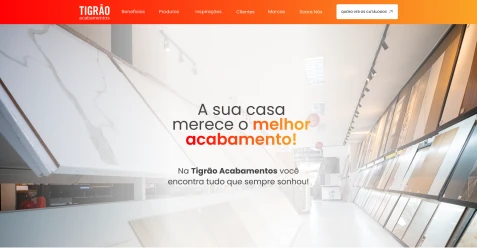
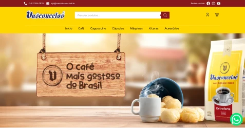
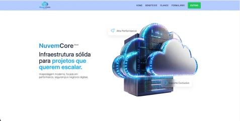
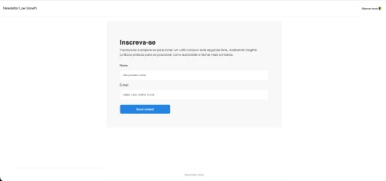
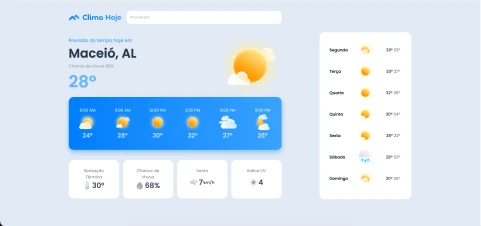
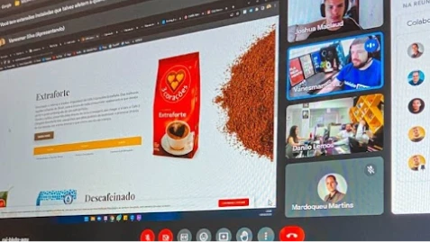
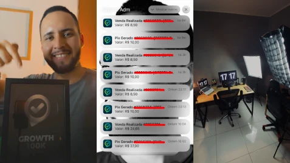

Hello, Mundo!
Desenvolvedor Web focado em performance, estrutura e resultado.
Mais de 5 anos criando sites, landing pages e soluções digitais orientadas à experiência do usuário e conversão. Atualmente cursando Engenharia de Software.

Alguns projetos
Cada projeto aqui foi pensado para mostrar não só o visual, mas como ele resolve problemas reais:
Landing Page - Ezzos
Landing page desenvolvida para apresentação estratégica da marca Ezzos, com foco em clareza de proposta de valor, posicionamento e conversão.

Institucional - Tigrão Acabamentos
Site institucional desenvolvido para presença digital oficial da empresa Tigrão Acabamentos, com foco em autoridade, clareza de serviços e geração de contato.

E-commerce - Loja Vasconcelos
E-commerce oficial desenvolvido para operação comercial real, com foco em performance, experiência do usuário e estrutura escalável.

Estudo: Landing Page Hosting
Projeto de estudo focado no desenvolvimento de uma landing page profissional para um serviço fictício de hospedagem, com ênfase em layout responsivo, UI components e boas práticas de front-end.

Estudo: NewsLetter
Projeto de formulário de inscrição para newsletter com suporte a alternância de tema (Light/Dark), desenvolvido para prática de front-end e portfólio profissional.

Estudo: Previsão do Tempo
Aplicação front-end desenvolvida para simular a interface de uma plataforma de previsão do tempo, com foco em estrutura semântica, organização visual e construção de layout responsivo utilizando HTML5 e CSS3.
Serviços
Confira todos os meus serviços
-
web_asset
Landing Pages
Criação de páginas focadas em conversão, com estrutura estratégica, carregamento rápido e layout responsivo. Ideal para campanhas, lançamentos e captação de leads.
-
web
Sites Institucionais
Construção de presença digital profissional para empresas e negócios online, com foco em organização de conteúdo e experiência do usuário.
-
web_stories
Estruturas para Produtos Digitais
Desenvolvimento de páginas de vendas, páginas de captura e estruturas para lançamentos e produtos perpétuos.
-
settings_applications
Manutenção e Otimização
Ajustes, melhorias e otimizações em páginas existentes.
Um pouco sobre a minha jornada profissional
Design Gráfico
Iniciei minha trajetória profissional atuando como designer gráfico, desenvolvendo habilidades voltadas para comunicação visual, construção de interfaces e experiência do usuário.

2021 - CurrentDesenvolvedor Web
Atuo como desenvolvedor web na criação de sites, landing pages e estruturas digitais voltadas para conversão, performance e experiência do usuário que já movimentaram mais de R$5 milhões em vendas.

2021 - currentEmpreendedor / Infoprodutor
Paralelamente à atuação como desenvolvedor, também desenvolvi projetos próprios no mercado digital, criando produtos digitais voltados para pessoas que buscavam soluções mais acessíveis para presença online. Os produtos criados geraram mais de R$250 mil em faturamento, resultado obtido exclusivamente com produtos próprios.
Minhas Habilidades
Atualmente, aprofundando meus estudos em arquitetura de software, escalabilidade e boas práticas de desenvolvimento dentro da graduação em Engenharia de Software.
Sobre mim
Eu sou Mardoqueu Martins
Sou Desenvolvedor Front-End com mais de 5 anos de experiência na
criação de sites, landing pages e soluções digitais focadas em
performance, experiência do usuário e conversão. Atualmente, curso
Engenharia de Software, aprofundando meus conhecimentos em
arquitetura e desenvolvimento escalável.
Iniciei minha trajetória como designer gráfico e, desde 2021,
integro design e desenvolvimento para construir interfaces
modernas e orientadas a resultados. Já participei de projetos do
mercado digital e também atuei como empreendedor, desenvolvendo
produtos próprios que superaram R$250 mil em faturamento.
Trabalho com HTML, CSS, JavaScript, Git, GitHub, WordPress e
Figma, sempre priorizando organização, boas práticas e qualidade
técnica.
Formação: Graduando em Eng. de Software
E-mail: dev.mardoqueumartins@gmail.com
WhatsApp: +55 (82) 99940-1648
Idiomas: Português, Brasil (nativo), Inglês básico.
Endereço: Maceió, Alagoas, Brasil.